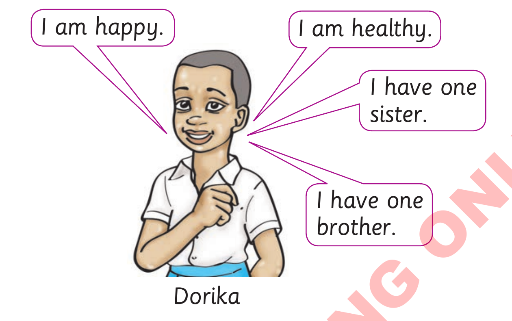

(b) Use and to join the following sentences together.

(i)
I am healthy. I am happy.
(ii)
I have one sister. I have one brother.
(iii)
Dorika is healthy. Dorika is happy.
(iv)
Dorika has one sister. Dorika has one brother.